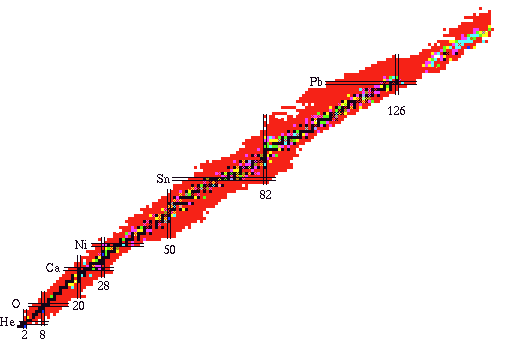

Chart Of Nuclide
Chart of Nuclide is made up about 18 parts.
Each part has a size of about 50 Kbytes.
When you click a region of dot, you may see more detailed chart section.
By clicking a cell, you may get property of the nuclide or atom.
Chart of Nuclide is based on the
evaluated data up to March, 2000.
Information on each nuclide contains Spin and
Half-life, Mass,
Strong gamma-rays from nuclear decay.

(c) Evaluation Group of China Nuclear Data Center, China Institute of
Atomic Energy, August 2002
Authors: Huang Xiaolong, Zhou Chunmei, Zhuang Youxiang, Zhao Zhixiang
(China Nuclear Data Center, P.O.Box 275 (41)£¬Beijing 102413, P.R.China)
T.V. Golashvili, H.Lbov, A.Demidov
(Atominform, P.O.Box 971, 127434, Moscow, Russia)
V.P. Chechev
(V.G.Khlopin Radium Institute, St. Petersburg 28 Second Murinsky Avenue,194021, Russia)
Contact to: Huang Xiaolong